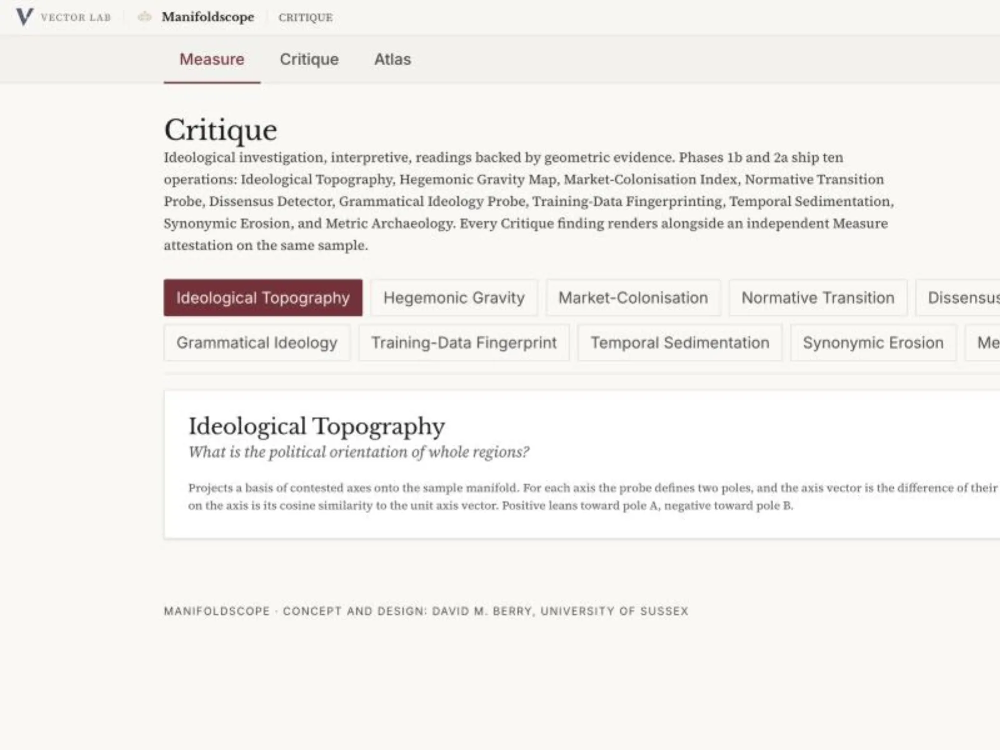
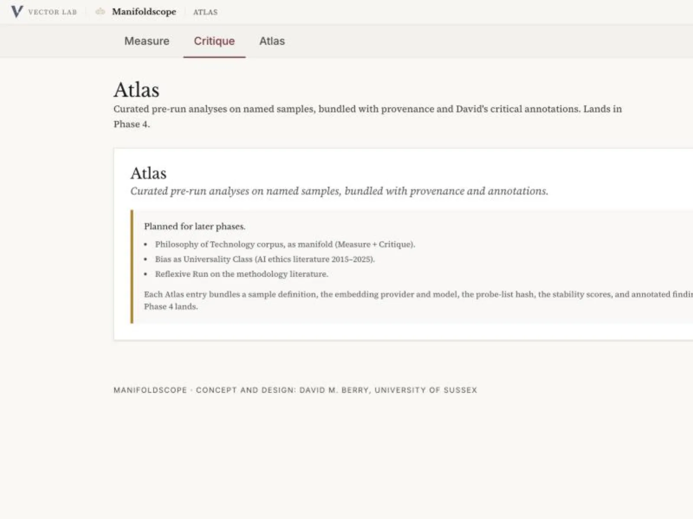

What Manifoldscope does.
Manifoldscope loads a single embedding manifold — the output vectors of one model under one sample — and runs two kinds of operation against it. Every finding carries a provenance record (manifold source, sample, metric, projection, probe list, parameters) so that results can be reproduced and cited.
Geometry
Intrinsic dimension, Forman-Ricci curvature, density gradient, geodesic map, sampling-bias, persistent homology, projection-distortion grid.
Ideology
Ideological topography, hegemonic gravity, market colonisation, normative transition, dissensus detector, grammatical ideology, training-data fingerprinting, temporal sedimentation, synonymic erosion, metric archaeology.
Curated runs
Pre-computed analyses on named samples, bundled with provenance and annotations. Ships in Phase 4.
Installing it locally.
Prerequisites
- Python 3.11+ for the FastAPI backend.
- Node.js 18+ (20 LTS recommended) and npm.
- Git, to clone the repository.
- For the default local embedder, nothing further: Manifoldscope ships with
sentence-transformersand runs MiniLM out of the box. For other providers see API keys.
Clone and install
git clone https://github.com/vector-lab-tools/manifoldscope.git
cd manifoldscope
npm install
cd backend
./setup.shsetup.sh creates backend/.venv and installs FastAPI, scikit-learn, numpy, scipy, networkx, ripser, and the rest.
Run
Backend, in one terminal:
cd backend
source .venv/bin/activate
uvicorn main:app --reload --port 8000Frontend, in a second terminal:
npm run devOpen http://localhost:3000. The default sample (Philosophy of Technology concept list) loads automatically. Click Measure → Intrinsic Dimension → Run for a first result.
curl http://localhost:8000/health.
Running your first operation.
- Open localhost:3000. The sample loader at the top picks the default Philosophy of Technology concept list.
- Stay on the Measure tab, with Intrinsic Dimension selected.
- Click Run. The backend embeds the sample under the configured provider, estimates per-point TwoNN local dimension, and streams the result back as NDJSON. The scatter colours each concept by its local dimension; the Deep Dive panel reports the quantitative breakdown.
- Switch to Critique, pick Ideological Topography, and run again. The result renders alongside the Measure attestation that was computed on the same sample.
Swap the sample
The sample loader accepts a concept list (plain text, one concept per line), a Zotero export, a Vectorscope hidden-state export, or a Theoryscope corpus-map import. Every operation records which sample it ran against; two runs on different samples never share a provenance record.
Swap the provider
The default is a local sentence-transformers model (no key, no quota). To switch to a hosted embedding model, see the next section.

Getting the API keys working.
Hosted embedding providers all work the same way at a high level: register, create a key, paste the key into Manifoldscope's provider settings, pick a model. Each card below gives the key source, the key prefix, cost tier, and the one gotcha that bites first.
localhost:3000 removes them.
sentence-transformers embedder enabled by default. The in-app provider-settings panel for hosted keys lands with Phase 2b (v0.4.x). The procedures below are correct for key creation now; the paste step unlocks when 2b lands. Meanwhile, Ollama (below) runs locally and needs no key.
OpenAI
Paidplatform.openai.com/api-keys → sk-…
text-embedding-3-large (3072d) · text-embedding-3-small (1536d)
Gotcha: a payment method is required before any call, including the first test. New accounts also default to a $0 spend cap — raise it at Billing → Limits.
Voyage AI
Free tierdash.voyageai.com → API Keys → pa-…
voyage-3-large (research-grade, 1024d) · voyage-3 (smaller)
Gotcha: 50M tokens / month free across all keys on the account — not per key.
Google (AI Studio)
Free tieraistudio.google.com → Get API key → AIza…
gemini-embedding-001 (3072d, Matryoshka-truncatable)
Gotcha: use AI Studio, not Vertex. The key pins to a hidden GCP project; if it suddenly says "API key not valid", the project was auto-reaped — create a new key.
Cohere
Free tierdashboard.cohere.com → API Keys
embed-english-v3.0 · embed-multilingual-v3.0 (1024d)
Gotcha: the default key is a Trial key, rate-limited and non-commercial. A Production key requires a payment method.
HuggingFace
Freehuggingface.co/settings/tokens → New token → hf_…
Any sentence-transformers model via Inference API (e.g. BAAI/bge-m3, intfloat/multilingual-e5-large-instruct)
Gotcha: first request to a model cold-starts it (30–60s). Second call is fast. Pick a popular model to minimise cold starts, or switch to Ollama.
sentence-transformers
Localbuilt in · nothing to configure
Default: sentence-transformers/all-MiniLM-L6-v2 (384d). First run downloads ~90 MB to ~/.cache/huggingface/.
Gotcha: to change model, edit MODEL_ID in backend/embed/sentence_transformers.py — then restart the backend.
Local provider · Ollama Local
Ollama runs embedding models on your own CPU or GPU. No key, no network, no quota. This is the recommended path for offline work.
- Install Ollama from ollama.com/download.
- Pull an embedding model:
ollama pull nomic-embed-text # 768d, fast ollama pull mxbai-embed-large # 1024d, better quality - Allow the browser to call Ollama from
localhost:3000:launchctl setenv OLLAMA_ORIGINS "http://localhost:3000" # restart Ollama (menubar icon → Quit, then relaunch)On Linux: add
Environment="OLLAMA_ORIGINS=http://localhost:3000"to~/.config/systemd/user/ollama.service.d/override.confthensystemctl --user restart ollama. - Confirm Ollama is reachable:
curl http://localhost:11434/api/tagsshould return the model list. - In Manifoldscope, open Settings → Providers → Ollama, leave the key blank, enter the model name (e.g.
nomic-embed-text).
https page to a plain http://localhost endpoint, and sometimes blocks them from http://localhost too. If Ollama requests silently fail in Safari, use Chrome or Firefox, or run Manifoldscope from http://127.0.0.1:3000 (Safari treats this origin differently).
Which provider for which operation
- Measure operations work with any provider. For reproducible open-weight geometry, prefer sentence-transformers or Ollama.
- Critique operations that bind geometry to training provenance (Training-Data Fingerprinting, Synonymic Erosion, Metric Archaeology) prefer open-weight backbones so model internals can be inspected. Commercial APIs will run them, but the archaeological reading is weaker.
- Metric Archaeology needs two embedders at once; MiniLM and MPNet are the defaults.
Three worked examples.
1. A philosophy-of-technology sample under OpenAI vs MiniLM
- Load the default sample.
- Configure OpenAI as above. Run Measure → Intrinsic Dimension; note the mean local ID.
- Switch to the built-in sentence-transformers provider. Run the same operation again.
- Open Measure → Metric Archaeology. The two embedders Procrustes-align with a quantified residual; the Jaccard overlap of each concept's k-NN tells you where the two models disagree about who neighbours whom.
2. Ideology under a known axis
- Open Critique → Ideological Topography. The default probe gives five contested axes (freedom/control, labour/capital, nature/culture, individual/collective, universal/particular).
- Run against the Philosophy of Technology sample. Each concept is scored on each axis; the heatmap colours each region by its net lean.
- The Measure attestation card next to the result shows the intrinsic dimension and curvature of the same sample under the same embedder, so you can read the ideological pattern against the geometric one.
3. Market colonisation of a technical vocabulary
- Switch to a sample of your own — e.g. an export from your Zotero collection of AI-ethics abstracts.
- Open Critique → Market-Colonisation Index. The probe lists market vocabulary (customer, product, market, return, asset, liability, …).
- The gradient field shows how market vocabulary is distributed across your sample's manifold; the per-concept score ranks which of your concepts have been pulled closest to the market pole.

When something goes wrong.
"Backend offline" in the header
The frontend cannot reach http://localhost:8000. Check the backend terminal, then curl http://localhost:8000/health. If the backend is running on a different host or port, set MANIFOLDSCOPE_BACKEND_URL before npm run dev.
"ModuleNotFoundError: No module named 'ripser'"
Ripser needs a working C compiler. On macOS: xcode-select --install. On Debian/Ubuntu: apt install build-essential. Then re-run ./setup.sh.
HuggingFace times out on the first call
Cold start. Re-run; the second call lands on a warm instance. If the model is routinely cold, pick a more popular one (e.g. sentence-transformers/all-MiniLM-L6-v2) or switch to Ollama.
The Run button is disabled
No sample loaded or no provider configured. The status bar at the bottom of the window reports which of the two is missing.
The rest of the family.
Manifoldscope is one of five tools in the Vector Lab. They share an editorial design system, an open-weight-friendly methodology, and a provenance plumbing pattern, and differ in their object:
- Vectorscope — internals of a single open-weight model (hidden states, attention, residual stream).
- Manifold Atlas — comparison of output geometries across many models.
- Theoryscope — the geometry of a corpus of theoretical texts.
- LLMbench — the surface of model outputs read as prose.
See the Vector Lab overview for the map of how they fit together.